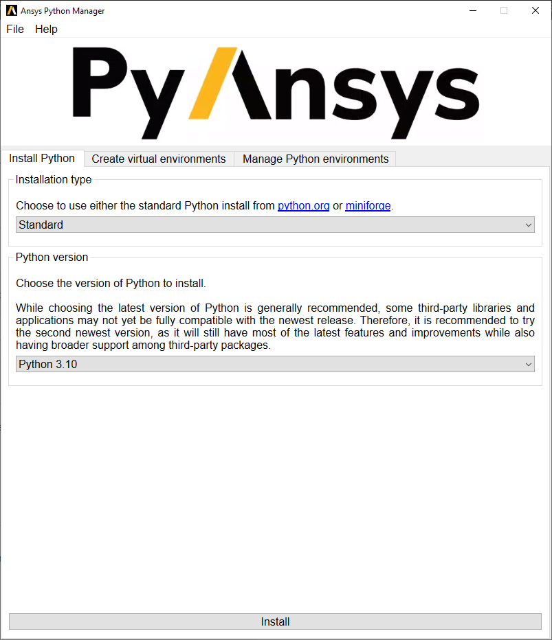

Ansys Python Manager (QT)#
This is a simple cross-platform QT application you can use to install Python and (optional) PyAnsys packages.
Installation#
Visit the Releases page and pull down the latest installer. This is a simple application you can use to install Python and manage your Python environment.
For developers#
You can be up and running with four lines of code:
git clone https://github.com/pyansys/python-installer-qt-gui
cd python-installer-qt-gui
pip install pip -U
pip install -e .
Now you can run it with:
ansys_python_installer
Details
Installing Pytools installer in developer mode allows you to modify the source and enhance it.
Before contributing to the project, please refer to the PyAnsys Developer’s guide. You will need to follow these steps:
Start by cloning this repository:
git clone https://github.com/pyansys/python-installer-qt-gui
Create a fresh-clean Python environment and activate it. Refer to the official venv documentation if you require further information:
# Create a virtual environment python -m venv .venv # Activate it in a POSIX system source .venv/bin/activate # Activate it in Windows CMD environment .venv\Scripts\activate.bat # Activate it in Windows Powershell .venv\Scripts\Activate.ps1
Make sure you have the latest version of pip:
python -m pip install -U pip
Install the project in editable mode:
python -m pip install -e .[tests,doc]
Finally, verify your development installation by running:
pytest tests -v
Style and testing#
This project uses pre-commit. Install with:
pip install pre-commit
pre-commit install
This will now run pre-commit for each commit to ensure you follow project
style guidelines. For example:
git commit -am 'fix style'
isort....................................................................Passed
black....................................................................Passed
blacken-docs.............................................................Passed
flake8...................................................................Passed
codespell................................................................Passed
pydocstyle...............................................................Passed
check for merge conflicts................................................Passed
debug statements (python)................................................Passed
check yaml...............................................................Passed
trim trailing whitespace.................................................Passed
Validate GitHub Workflows................................................Passed
If you need to run it again on all files and not just staged files, run:
pre-commit run --all-files
Local build#
This application can be deployed as a ‘frozen’ application using pyinstaller with:
pip install -e .[freeze]
pyinstaller frozen.spec
This will generate application files at dist/ansys_python_manager and you
can run it locally by executing Ansys Python Manager.exe.
Documentation#
For building documentation, you can either run the usual rules provided in the Sphinx Makefile, such us:
pip install -e .[doc]
make -C doc/ html
# subsequently open the documentation with (under Linux):
<your_browser_name> doc/html/index.html
Distributing#
This project is vectored to be an open-source project. For the time being, feel free to distribute it internally, but direct users to visit the Releases page